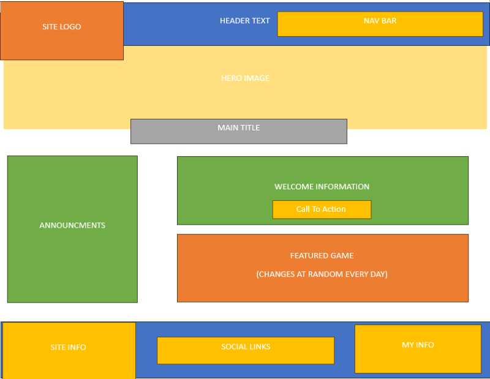
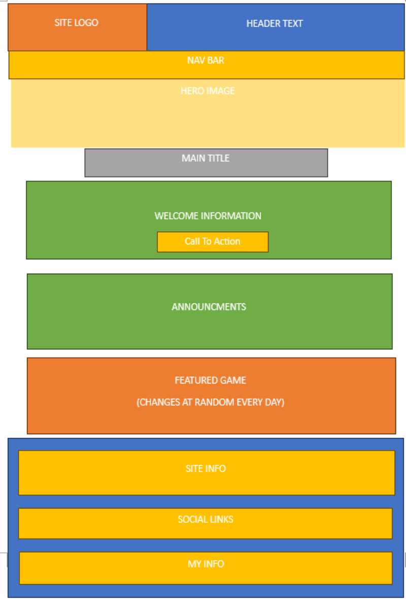

WDD231 Final Project Plan
Site Name:
My Video Game Archive
Why This Name?
This name was chosen because it displays what the site is for in a basic way. Providing the user with a personal and effective video game archive that can be updated to add games that they want to the site.
Site Purpose:
The goal of the site is to create a Video Game Archive that holds information on many different games from history. The "My" part of this site emphasizes the ability we give users to edit their preferences on the site and even add their own games upon request through a form submitted to the server. The goal is to provide users with an interactive Video Game Archive where they can discover games from the past and present, allow them to sort their favorite games, and ultimately serve as a tool to help them play new games or relive nostalgic memories with games they grew up with.
Scenarios:
Scenario One
Scenario Two
Color Schema:
Primary Color
#77DD77
Secondary Color
#F5F5DC
Third Color
#FF6961
Accent One Color
#0D98BA
Accent Two Color
#301934
Background (Default) Color
#fff
Black(Font) Color
#090e16
Dark Mode Primary Color
#161618
Dark Mode Secondary Color
#F7F7F7
Typography:
This font is Jersey 15 it will be used on headers, and other title like elements.
This font is Josefin Sans it will be used on everything else on the site.
Wireframe (Home Page):
Large:
Small:
